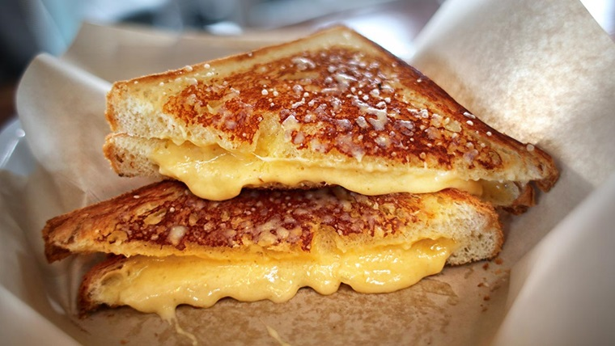

Toasties

Description
Golden bread with ham and melted cheese.
Ingredients
Steps
- Lay 2 pieces of bread on flat surface
- Butter one slice
- Put a slice of cheese on buttered bread
- Put a slice of ham on top of cheese slice
- Put second piece of bread on top of the ham to form a sandwich
- Put sandwich into toatsie machine until golden brown